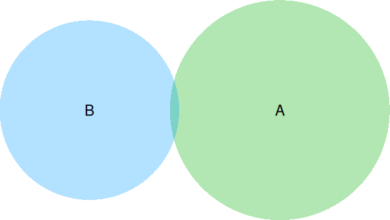
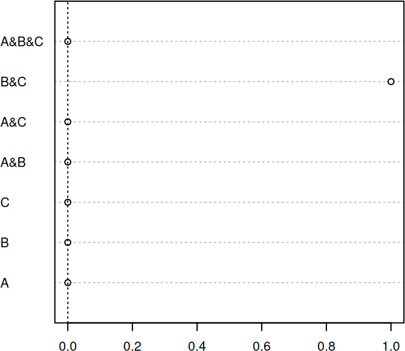
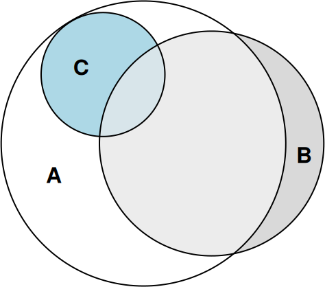
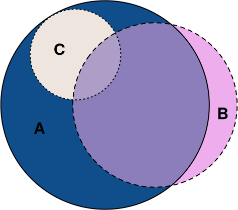

library(venneuler, quietly = TRUE)
venn_fit <- venneuler(c(A = 75, B = 50, "A&B" = 0))
plot(venn_fit)
Johan Larsson
19 October 2016
eulerr is an R package that generates area-proportional euler diagrams to display set relationships (intersections, unions, and disjoints) with circles. Euler diagrams are Venn diagrams without the requirement that all set interactions be present (whether they are empty or not). That is, depending on input, eulerr will sometimes produce Venn diagrams but sometimes not.
R features a number of packages that produce Euler and/or Venn diagrams; some of the more prominent ones (on CRAN) are
The last of these (venneuler) serves as the primary inspiration for this package, along with the refinements that Ben Fredrickson has presented on his blog and made available in his javascript venn.js.
venneuler, however, is written in java, preventing R users from browsing the source code (unless they are also literate in java) or contributing. Furthermore, venneuler is known to produce imperfect output for set configurations that have perfect solutions. Consider, for instance, the following example in which the intersection between A and B is unwanted.
eulerr is based on the improvements to venneuler that Ben Fredrickson introcued with venn.js but has been coded from scratch, uses different optimizers, and returns the residuals and stress statistic that venneuler features.
Currently, it is possible to provide input to eulerr as either
library(eulerr)
# Input in the form of a named numeric vector
fit1 <- euler(c("A" = 25, "B" = 5, "C" = 5,
"A&B" = 5, "A&C" = 5, "B&C" = 3,
"A&B&C" = 3))
# Input as a matrix of logicals
set.seed(1)
mat <-
cbind(
A = sample(c(TRUE, TRUE, FALSE), size = 50, replace = TRUE),
B = sample(c(TRUE, FALSE), size = 50, replace = TRUE),
C = sample(c(TRUE, FALSE, FALSE, FALSE), size = 50, replace = TRUE)
)
fit2 <- euler(mat)We inspect our results by printing the eulerr object
original fitted residuals regionError
A 13 13 0 0.008
B 4 4 0 0.002
C 0 0 0 0.000
A&B 17 17 0 0.010
A&C 5 5 0 0.003
B&C 1 0 1 0.024
A&B&C 2 2 0 0.001
diagError: 0.024
stress: 0.002 or directly access and plot the residuals.

This shows us that the A&B&C intersection is somewhat overrepresented in fit2. Given that these residuals are on the scale of the original values, however, the residuals are arguably of little concern.
For an overall measure of the fit of the solution, we use the same stress statistic that Leland Wilkinson presented in his academic paper on venneuler (Wilkinson 2012), which is given by the sums of squared residuals divided by the total sums of squares:
\frac{\sum_{i=1}^n (f_i - y_i)^2}{\sum_{i=1}^n (y_i - \bar{y})^2}.
We fetch it from the stress attribute of the eulerr object.
We can now be confident that eulerr provides a reasonable representation of our input. Were it otherwise, we would do best to stop here and look for another way to visualize our data. (I suggest the excellent UpSetR package.)
No we get to the fun part: plotting our diagram. This is easy, as well as highly customizable, with eulerr.
plot(fit2)
# Change fill colors, border type (remove) and fontface.
plot(
fit2,
fills = c("dodgerblue4", "plum2", "seashell2"),
edges = list(lty = 1:3),
labels = list(font = 2)
)

eulerr’s default color palette is taken from qualpalr – another package that I have developed – which uses color difference algorithms to generate distinct qualitative color palettes.
Details of the implementation will be left for a future vignette but almost completely resemble the approach documented here.
eulerr would not be possible without Ben Fredrickson’s work on venn.js or Leland Wilkinson’s venneuler.